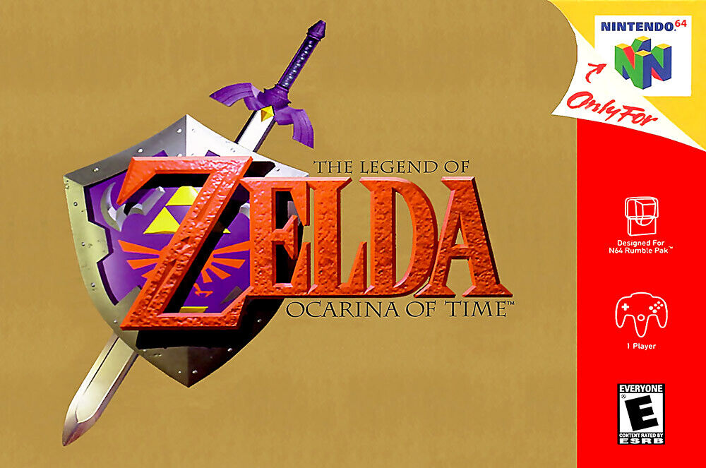

Popular Games
Super Mario 64 for the Nintendo 64

Super Smash Bros Melee for the GameCube

Pokemon Red Version for the Game Boy

Legend of Zelda: Ocarina of Time for the Nintendo 64

Mario Kart 8 for the Wii U